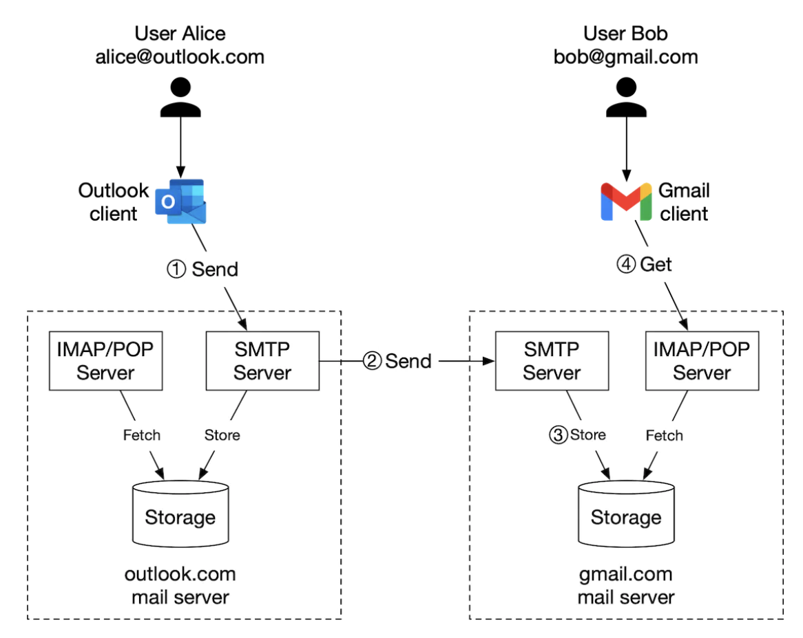
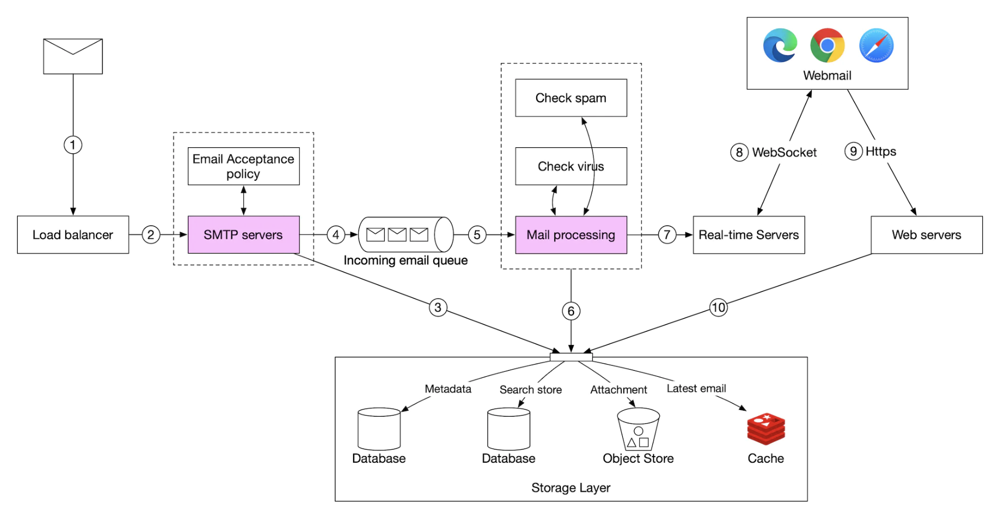
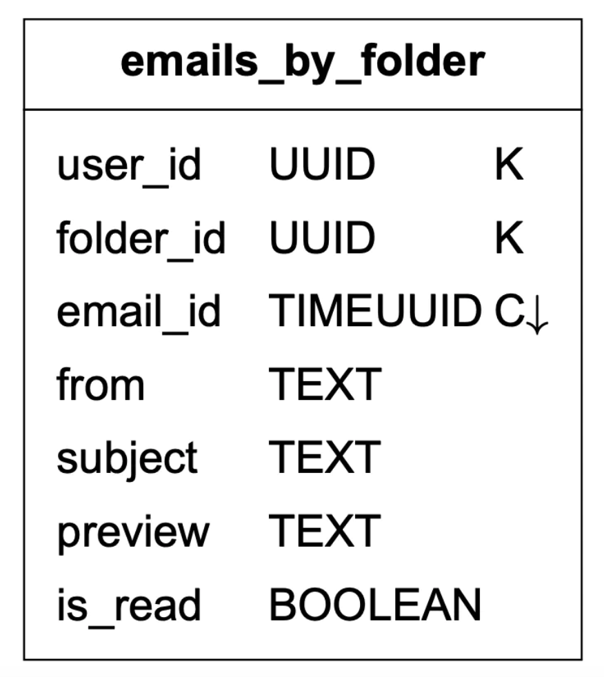
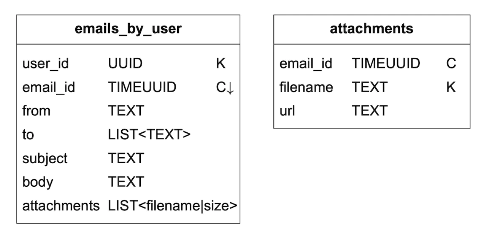
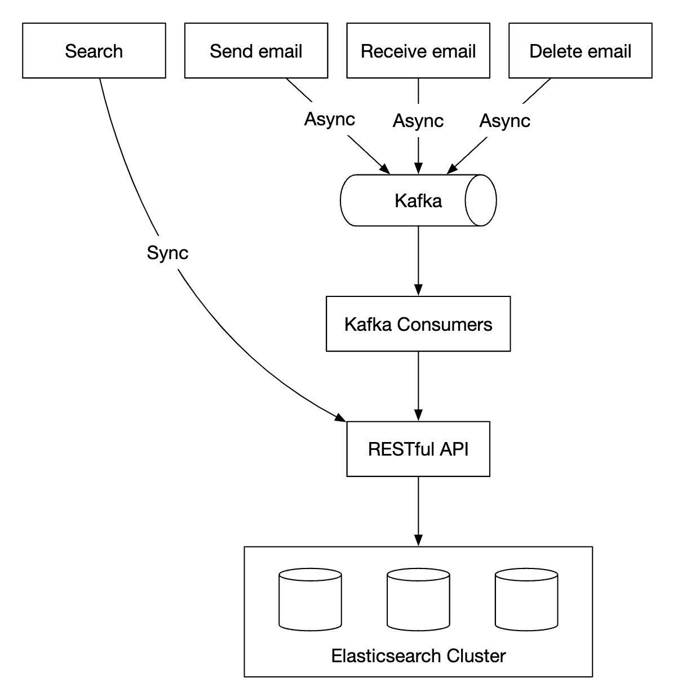
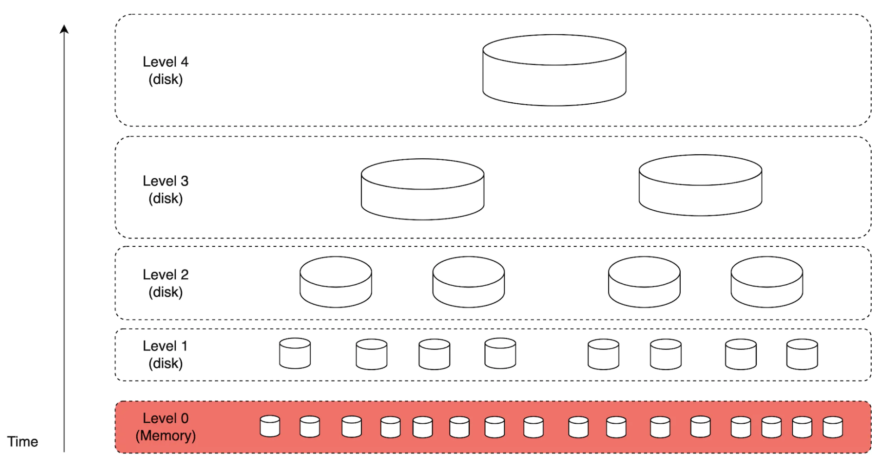
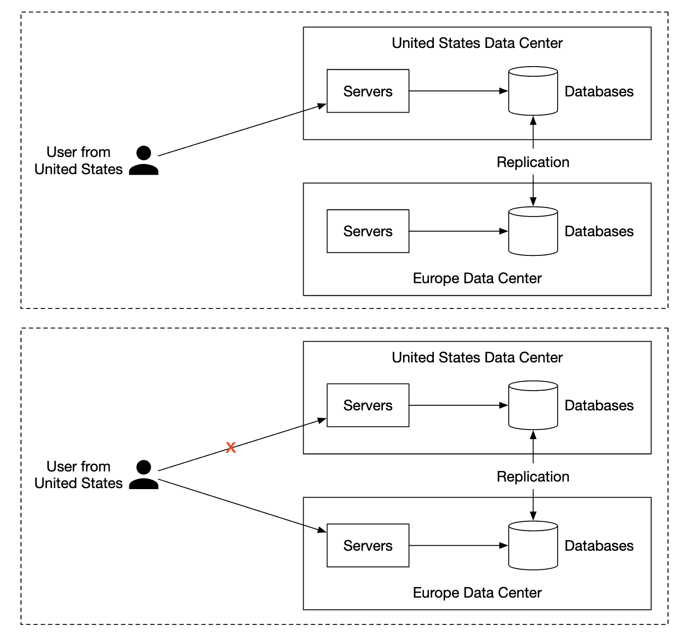

第 23 章：分布式邮件服务
原章节：Distributed Email Service · 原项目路径
23. Distributed Email Service/
本章导读
邮件协议比 HTTP 还老，为什么系统设计面试里还要专门考它？
因为邮件是最苛刻的一类分布式系统练习题。它同时要求：数据一封都不能丢（用户无法接受收件箱里少了一封合同邮件）、全球可用（发信人可能在任何一个机房）、扛得住 10 亿用户和每年两千 PB 量级的写入，还要对抗一个永不休息的对手——垃圾邮件发送者。
这一章会带你走一遍 Gmail 这个量级的邮件系统是怎么搭起来的。其中最有价值、也最容易被忽略的部分是邮件送达率（Email Deliverability）：让服务器"能发信"只要十分钟，让发出去的信"进得了收件箱"可能要花几个月。
学完这一章，你应该能回答：为什么 Gmail 不用普通关系型数据库存邮件？为什么你自己搭的邮件服务器发出去的信总是进垃圾箱？为什么邮件搜索不能写成 SELECT ... WHERE body LIKE '%关键词%'？
你将学到
- SMTP / IMAP / POP3 三种协议各自负责什么，为什么 IMAP 取代了 POP3
- MX 记录、附件 base64 编码这些邮件系统特有的基础知识
- 传统邮件服务器为什么扛不住规模，分布式邮件服务是怎么拆的
- 发信与收信两条完整链路的每一个环节，以及队列积压意味着什么
- 邮件元数据该怎么建模、怎么分片，为什么要把"已读/未读"拆成两张表
- 邮件送达率：SPF / DKIM / DMARC 分别解决什么问题，新 IP 为什么会被当成垃圾邮件，硬退信和软退信怎么处理
- 反垃圾邮件的常见手段：贝叶斯过滤、发信人信誉、灰名单
- 全文搜索为什么要用倒排索引，以及 LSM-Tree 为什么适合写密集场景
1. 邮件系统的基本功：发送和接收是两个世界
在动手设计之前，必须先分清一件事："发邮件"和"收邮件"用的是完全不同的协议，解决的问题也完全不同。
1.1 四个协议，各管一段
| 协议 | 全称 | 干什么 | 谁在用 | 默认端口 |
|---|---|---|---|---|
| SMTP | Simple Mail Transfer Protocol | 发送与中继邮件 | 客户端 → 服务器（提交）、服务器 → 服务器（中继） | 25（中继）、587（提交）、465（隐式 TLS） |
| POP3 | Post Office Protocol v3 | 收取邮件，默认下载后从服务器删除 | 老式邮件客户端 | 110 / 995（TLS） |
| IMAP | Internet Message Access Protocol | 收取邮件，邮件始终保留在服务器 | 现代邮件客户端、手机 | 143 / 993（TLS） |
| HTTPS | HyperText Transfer Protocol Secure | 不是邮件协议，但 Web 邮箱用它做 API | 浏览器里的 Gmail、Outlook Web | 443 |
这里有个初学者最容易搞混的点，务必记牢：
SMTP 只负责"送出去"，它不能"收进来"。 你写好一封邮件点"发送"，SMTP 负责把这封信从你的客户端送到你的发信服务器，再由你的发信服务器送到对方的收信服务器。整个过程 SMTP 都在做同一件事：把邮件从 A 推到 B。 但收件人怎么"看到"这封信？那是 IMAP / POP3 / HTTPS 的活儿——客户端主动去服务器拉取。
所以完整的邮件生命周期是这样的：
发件人客户端 ──SMTP──▶ 发件方邮件服务器 ──SMTP──▶ 收件方邮件服务器
│
收件人客户端 ◀──IMAP / POP3 / HTTPS──────────────────────┘
1.2 为什么 IMAP 取代了 POP3
这是面试里常被追问的一个点，也是理解邮件系统演进的关键。
POP3 的工作模型是"邮局自取"：客户端连上服务器，把邮件下载到本地，然后（默认）从服务器上删掉。邮件的"状态"——哪些读过、哪些没读、分在哪个文件夹——全部保存在客户端本地。
在只有一台电脑、一个邮件客户端的年代，这没问题。但在今天：
- 你在手机上读了邮件，打开笔记本，它还显示未读；
- 你在笔记本上把邮件归档了，手机上还在收件箱里；
- 你换了台电脑，历史邮件和文件夹全都不见了；
- 服务器上根本没有"文件夹"这个概念，只有一堆邮件。
IMAP 的工作模型是"邮局寄存"：邮件始终留在服务器上，客户端只是"远程操作"这个邮箱。文件夹、已读/未读标记、星标、删除标记，全部是服务端的持久状态。于是：
- 任何设备打开，看到的都是同一份邮箱状态；
- 支持只拉邮件头（先在列表里看到标题和发件人，点开才拉正文），省流量，手机上尤其重要；
- 支持服务端搜索（不用把所有邮件下到本地再搜）；
- 支持 IDLE 推送（新邮件到达时服务器主动通知客户端，不用轮询）。
一句话总结：POP3 把状态放在客户端，IMAP 把状态放在服务端。多设备时代，状态必须放在服务端。
延伸：IMAP 本身设计于 1980 年代，协议相当复杂（RFC 3501 有 100 多页，且客户端要处理各种服务器实现差异）。业界近年推出了 JMAP（JSON Meta Application Protocol，RFC 8620/8621） 作为现代替代品，用 JSON 和批量请求简化了移动端场景，Fastmail 等厂商已经在用。但 IMAP 的存量太大，短期内不会被取代。
1.3 MX 记录：别人怎么找到你的邮件服务器
域名 gmail.com 对应的 IP 是 Web 服务器的 IP，但邮件不走这个 IP。邮件有一套独立的寻址记录，叫 MX 记录（Mail Exchanger Record）。
MX 记录是 DNS 里的一条记录类型，告诉全世界："发给 gmail.com 的邮件，请投递到这几台服务器，优先级如下。"

一条 MX 记录长这样：
gmail.com. MX 5 gmail-smtp-in.l.google.com.
gmail.com. MX 10 alt1.gmail-smtp-in.l.google.com.
数字是优先级（Preference），越小越优先。发信方会先尝试优先级 5 的服务器，连不上再退到 10。这就是邮件系统原生的**故障转移（Failover）**机制。
面试加分点：SPF、DKIM、DMARC 这些反垃圾邮件机制，本质上也是 DNS 记录（TXT 类型），只是挂在不同的子域名上。所以邮件系统的"配置面"几乎全在 DNS 里。理解了这一点，你就理解了为什么邮件送达率问题通常表现为"DNS 配错了"。
1.4 附件：base64 编码和 25 MB 上限
邮件协议诞生于只能传 7 位 ASCII 文本的年代。要传二进制文件（图片、PDF），必须做编码，标准做法是 base64。
base64 用 4 个 ASCII 字符表示 3 个字节，所以二进制数据编码后体积会膨胀约 33%。
这也是为什么各大邮箱的"25 MB 附件上限"看起来总是不太够用——这个上限限制的通常是编码后的报文大小，而不是你原始文件的大小。
附件大小是可配置的，个人邮箱和企业邮箱的限制往往不同。
2. 传统邮件服务器：为什么它扛不住规模
理解了协议，我们看看"朴素"的邮件服务器是怎么做的。

流程很直观：
- Alice 登录 Outlook，写好邮件，点击"发送"。邮件通过 SMTP 送到 Outlook 的邮件服务器。
- Outlook 的服务器查询 DNS，找到
gmail.com的 MX 记录，然后通过 SMTP 把邮件中继到 Gmail 的服务器。 - Bob 通过 IMAP 或 POP3 从 Gmail 服务器上把邮件取下来。
存储方式：一封邮件一个文件
传统邮件服务器把邮件存在本地文件系统上，每封邮件是一个独立的文件。

在小规模下这套方案完全能用。但它有两个致命问题：
问题一：磁盘 I/O 成为瓶颈。 邮件是海量小文件。10 亿用户每天收发几百亿封邮件，意味着每秒几十万次文件创建、打开、读取、删除。机械硬盘的随机寻址能力（IOPS）只有 100～200 次/秒，这个量级根本扛不住。
问题二：不满足高可用和可靠性要求。 硬盘会坏，服务器会宕机。而邮件是用户不允许丢失的数据——一台机器挂了，上面所有用户的邮件就都没了。本地文件系统天然是单点。
这就是"单机方案"的典型死法：不是功能做不出来，而是规模一上来，I/O 和可用性同时崩掉。
3. 高层设计：把邮件系统拆成可独立扩展的部件
分布式邮件服务器的设计目标是：继续支持 IMAP / POP3（给原生客户端）和 SMTP（服务器间中继），同时为 Web 邮箱提供一套 RESTful API。
为什么 Web 邮箱要用 HTTP 而不是 SMTP？原笔记给出的理由是灵活性和可扩展性：HTTP 生态成熟（负载均衡、缓存、鉴权、网关、监控都有现成方案），加新功能容易；而 SMTP 是为"传一封信"设计的，不适合做"列出文件夹""标记已读"这类操作。
3.1 API 设计示例
POST /v1/messages # 发送一封邮件给 To、Cc、Bcc 中的收件人
GET /v1/folders # 返回某个账号的所有文件夹
GET /v1/folders/{:folder_id}/messages # 返回某文件夹下的邮件（分页）
GET /v1/messages/{:message_id} # 获取某封邮件的完整信息
GET /v1/folders 的响应大致是：
[{
"id": "string", // 文件夹唯一标识
"name": "string", // 文件夹名
"user_id": "string" // 所属账号
}]
关于默认文件夹：原笔记引用了 RFC 6154，指出标准默认文件夹可以取这几个名字：
All、Archive、Drafts、Flagged、Junk、Sent、Trash。这个规范的意义是让不同客户端对同一套服务端文件夹有一致的理解——你在手机上归档的邮件，在网页版里也应该出现在 Archive 里。
GET /v1/messages/{:message_id} 的响应大致是：
{
"user_id": "string", // 所属账号
"from": {"name": "string", "email": "string"}, // 发件人
"to": [{"name": "string", "email": "string"}], // 收件人列表
"subject": "string", // 主题
"body": "string", // 正文
"is_read": true // 是否已读
}
3.2 组件清单

| 组件 | 职责 | 关键设计考量 |
|---|---|---|
| Webmail | 用户用浏览器收发邮件 | 前端，无状态 |
| Web 服务器 | 对外提供请求/响应服务，处理登录、注册、用户资料等 | 无状态，可任意增删 |
| 实时服务器（Real-time Servers） | 把新邮件实时推送给在线客户端 | 用 WebSocket；老浏览器降级为长轮询 |
| 元数据数据库 | 存主题、正文、发件人、收件人等邮件元数据 | 有状态，最难扩展的部分 |
| 附件存储 | 存大文件（附件） | 用对象存储（如 Amazon S3） |
| 分布式缓存 | 缓存最近邮件，提升体验 | Redis |
| 搜索存储 | 支持全文搜索 | 分布式文档存储（如 Elasticsearch） |
为什么要拆出这么多独立存储？ 因为这几类数据的访问模式完全不同：元数据是"小、读多、要强一致"，附件是"大、写一次读多次、要便宜"，搜索索引是"写密集、读稀疏、要能全文匹配"。把访问模式不同的数据放在一起，只能互相拖累——这是后面反复出现的核心设计原则。
3.3 发信流程

- 用户写好邮件，点"发送"。请求先到负载均衡器。
- 负载均衡器做限流（防止有人狂发邮件），然后把请求路由到某台 Web 服务器。
- Web 服务器做基础校验（比如邮件大小）。如果收件人和发件人同域，可以直接短路投递到本地邮箱——但垃圾邮件检查还是要先做。
- 校验通过 → 邮件进入消息队列（附件在对象存储里，消息里只放引用）。校验失败 → 进错误队列。
- SMTP 出站工作进程（outgoing workers） 从队列里取消息，做垃圾/病毒检查，然后通过 SMTP 中继到目标邮件服务器。
- 邮件同时存入**"已发送"（Sent）文件夹**。
3.4 队列积压是一个重要的监控信号
原笔记专门强调了这一点：要监控出站消息队列的长度。队列持续增长通常意味着两种情况之一：
- 对方邮件服务器不可用。这时应该用指数退避（Exponential Backoff）重试——比如等 1 分钟、5 分钟、30 分钟、2 小时……而不是疯狂重试。疯狂重试只会让对方更不愿意收你的信，也会拖垮你自己的队列。
- 消费者不够用。处理速度跟不上生产速度，需要扩容消费者。
为什么指数退避这么重要？ 邮件是"延迟可接受、丢失不可接受"的业务。用户不会介意一封信晚到 5 分钟，但会介意它永远不到。所以重试策略必须足够持久：业界惯例是持续重试 24～72 小时，只有超过这个窗口才最终放弃并向发件人发退信通知。
3.5 收信流程

- 外部邮件到达 SMTP 负载均衡器，分发到各台 SMTP 服务器。
- SMTP 服务器执行收信策略（mail acceptance policy）——比如明显非法的邮件直接丢弃。这是第一道反垃圾防线，也是成本最低的一道：在 SMTP 会话阶段就拒收，不要先把垃圾收下来再分析（收下来要消耗存储和后续算力）。
- 如果附件太大，直接放进对象存储（S3），数据库里只存引用。
- 邮件处理工作进程做初步检查，然后把结果分别写入元数据存储、缓存、对象存储，并通知实时服务器。
- 离线用户重新上线时，通过 HTTP API 拉取新邮件。
注意收发两条链路的对称性：都是"负载均衡 → 校验 → 队列/工作进程 → 多路写入"。区别在于发信是自己主动推给别人（要处理对方不可用），收信是别人推给自己（要处理恶意输入）。
4. 元数据数据库：本章最硬的设计题
邮件元数据是典型的"看起来简单、做起来极难"。
4.1 邮件元数据的五个特征
原笔记总结得很到位，这五条直接决定了后面的所有选型：
- 邮件头（headers）通常很小，且访问极其频繁——列表页要显示发件人、主题、时间。
- 正文大小跨度极大，但通常只读一次——点开看过就不会再看了（少数会被反复搜索）。
- 绝大多数操作是"单用户隔离"的——取邮件、标已读、搜索，都只涉及一个用户的数据，用户之间几乎不交叉。
- 数据新鲜度影响使用——用户几乎只读最近的邮件。
- 可靠性要求极高——数据丢失不可接受。
第 3 条是最关键的：因为用户之间不交叉，我们天然可以按 user_id 分片，把同一个用户的所有数据放在同一个分片上。 这让"跨分片查询"这个分布式系统最大的噩梦，在这里几乎不存在。
4.2 数据库选型：三个方案都不完美
| 方案 | 优点 | 致命缺点 |
|---|---|---|
| 关系型数据库 | 可以为邮件头和正文建索引 | 为"小数据块"优化，正文这种大字段会拖垮性能；单机容量有上限 |
| 分布式对象存储 | 适合做备份存储 | 无法高效支持搜索、"标记已读"这类操作——它只会"按 key 取整个对象" |
| NoSQL（如 Bigtable） | Gmail 用的就是 Google BigTable | 没有开源版本，拿不到 |
结论是：市面上几乎没有现成方案能完美匹配。Gmail / Outlook 这个量级，数据库往往是自研的，核心目标之一是降低 IOPS。
面试技巧：面试官不会真的让你设计一个分布式数据库。原笔记说得很实在——"面试中设计一个新分布式数据库是不现实的，但说清楚它应该具备什么特性是加分的。"
原笔记列出的五个特性值得背下来：
- 单个列（column）可以到个位数 MB 级别（因为邮件正文可能很大）
- 强一致性
- 为降低磁盘 I/O 而设计
- 高可用、容错
- 支持方便的增量备份
4.3 数据建模：主键的两段式设计
分片键选 user_id，让一个用户的数据落在同一个分片上。
代价：这样就没法让多个人共享同一封邮件（比如同一封邮件同时属于发件人和收件人的邮箱）。原笔记明确说，这个需求不在本题范围内，可以接受。
主键由两部分组成：
- 分区键（Partition Key）：决定数据落在哪个分片（数据分布）。
- 聚类键（Clustering Key）：决定同一个分区内数据的排序方式。
图例说明：

folders 表：

emails 表：

其中 email_id 是 TIMEUUID 类型——一种把时间戳编码进去的 UUID。这样按 email_id 排序就等于按邮件创建时间排序，不需要额外的 created_at 字段和二级索引。这是一个很实用的技巧。
attachments 表：附件单独建表，用文件名标识。

4.4 已读/未读：一个典型的"反范式化"取舍
在关系型数据库里，"查所有未读邮件"是一句 WHERE is_read = false 就搞定的事。但在 Cassandra 这类宽列数据库里做不到——它禁止在非分区键、非聚类键的列上做过滤。
这背后是 Cassandra 的设计哲学：查询必须"顺着数据的物理存储顺序走"，不允许全表扫描。好处是每次查询都极快、可预测；代价是你必须为每一种查询模式预先设计一张表。
原笔记提到的"workaround"是"把一个文件夹的所有邮件取出来在内存里过滤"——这在规模稍大的应用里完全不可行：一个用户可能有几十万封邮件，每次都全量拉出来过滤，内存和网络都会被吃光。
正确做法是反范式化（De-normalization）：把 emails 表按"已读/未读"拆成两张表。

这就是 NoSQL 世界的基本功：用存储冗余换查询性能。同一封邮件的信息存了两份，标记已读时要从一张表删掉、往另一张表插入（或者更新状态字段）。听起来浪费，但换来的是"取未读邮件"变成一次分区内顺序扫描，快得毫无悬念。 关系型数据库用 JOIN 和索引解决这类问题；NoSQL 用"多写一份"解决。没有免费的午餐，只是把成本从"查询时"挪到了"写入时"。
4.5 会话线索（Conversation Threads）
Gmail 的"会话视图"（把一来一回的邮件折叠成一条线）靠的是邮件头里的三个字段：
{
"headers": {
"Message-Id": "<7BA04B2A-430C-4D12-8B57-862103C34501@gmail.com>",
"In-Reply-To": "<CAEWTXuPfN=LzECjDJtgY9Vu03kgFvJnJUSHTt6TW@gmail.com>",
"References": ["<7BA04B2A-430C-4D12-8B57-862103C34501@gmail.com>"]
}
}
Message-Id：这封邮件自己的唯一标识。In-Reply-To：这封邮件回复的是哪一封。References：整条会话的祖先链。
服务端只负责原样保存这些头，由邮件客户端去解释它们、重建出会话树。这样服务端逻辑简单，客户端也灵活（不同客户端可以有不同的折叠策略）。
4.6 一致性取舍：宁可短暂不可用
原笔记在这里做了一个明确的选择："trade availability for consistency"——为了强一致，牺牲可用性。
理由是邮件元数据（尤其是"已读/未读""已发送"这类状态）不一致的代价很高：用户刚发的邮件如果"已发送"文件夹里看不到，会以为发送失败，然后重发一遍。
所以当发生故障转移（Failover）或网络分区（Network Partition）时，受影响用户的操作会短暂不可用，而不是返回可能过期的数据。
用 CAP 的语言说：这是一个 CP 系统。对比一下第 21 章（类似 Google 搜索）和第 20 章（监控告警），你会发现同一个架构模式在不同业务约束下会做出完全相反的选择——这就是系统设计的核心：没有最优解，只有最合适的取舍。
5. 邮件送达率：本章最实用的一节
这是原笔记写得最浅、但工程价值最高的部分。它只用了半页列了六条建议，我们就着这六条，把背后的机制讲透。
5.1 "发送成功"不等于"送到了"
先建立一个关键认知：SMTP 返回 250 OK，只表示对方服务器"收下了"这封信，不表示用户能在收件箱里看到它。
对方的邮件服务器可以在三个位置做拦截：
- SMTP 会话阶段：直接回
4xx（临时拒绝，你稍后重试）或5xx（永久拒绝，别再试了）。 - 收下之后、投递之前：扔进垃圾箱（Junk）或"推广"标签页。
- 静默丢弃（Blackhole）：收下了，什么都不回，也不投递。这是最恶劣的情况——你根本不知道自己被拦了。
所以"送达率"是一个观测难题：你只能通过退信率、投诉率、以及各家邮箱提供的发件人信誉面板（如 Google Postmaster Tools）来间接判断。
5.2 三层身份验证：SPF、DKIM、DMARC
这三个词是送达率的核心，也是初学者最容易混成一团的地方。先用一个类比建立直觉：
- SPF 是门卫核对车牌：这辆车（IP）是不是登记在册、允许代表这个小区送快递？
- DKIM 是包裹上的防拆封条：包裹在运输途中有没有被打开过？封条上的签名是不是寄件人的？
- DMARC 是你留给门卫的处理规则：车牌和封条都对不上时，你是要门卫直接拒收、先扣下来检查，还是照收但写份报告给你？
SPF（Sender Policy Framework，发件人策略框架）
你的域名在 DNS 里发布一条 TXT 记录，声明哪些 IP 有资格代表这个域名发信：
example.com. TXT "v=spf1 ip4:203.0.113.0/24 include:_spf.google.com -all"
接收方收到邮件时，检查发起 SMTP 连接的来源 IP 是否在列表里：
ip4:203.0.113.0/24：授权这个 IP 段。include:_spf.google.com：把 Google 的 SPF 记录整个包含进来（用第三方代发邮件时必须写）。-all：不在列表里的一律拒绝（~all是"软失败"，只标记不拒绝；-all是硬失败，强烈建议用这个）。
SPF 的局限：
- 它校验的是信封发件人（Envelope From / Return-Path），不是用户在邮件客户端里看到的
From:头。两者可以不一致——这正是伪造邮件的空间。 - 邮件被转发后会失效。你发给 A，A 自动转发给 B，此时发信 IP 变成了 A 的服务器，不在你的 SPF 里，校验必然失败。
DKIM（DomainKeys Identified Mail，域名密钥识别邮件）
发送方用私钥对选定的邮件头 + 正文做签名，把签名附在邮件头里；公钥发布在 DNS 上：
selector1._domainkey.example.com. TXT "v=DKIM1; k=rsa; p=MIGfMA0GCS..."
接收方拿到邮件后，用 DNS 里的公钥验签。
DKIM 证明两件事：
- 这封邮件确实是由持有该域名私钥的一方发出的；
- 被签名的部分（指定的头 + 正文）在传输过程中没有被篡改。
DKIM 的关键优势：签名跟着邮件走。邮件被转发时，只要被签名的部分没被修改，验签依然通过——这正好补上了 SPF 的短板。
DMARC（Domain-based Message Authentication, Reporting & Conformance）
DMARC 记录发布在 _dmarc.<你的域名>，它做三件事：
第一，对齐检查（Alignment）。 这是 DMARC 最核心的价值。它要求用户在邮件客户端里看到的 From: 域名，必须与 SPF 或 DKIM 通过验证的域名一致。
为什么需要对齐？因为攻击者可以这样做：用自己的域名（
evil.com）发信，SPF 和 DKIM 全都合法通过，但把From:头写成yourbank.com。没有 DMARC 的话，接收方看到 SPF/DKIM 都通过了，就可能放行——用户看到的是"来自 yourbank.com"，实际却是evil.com发的。DMARC 的对齐检查专门堵这个漏洞。
第二，失败处理策略。 通过 p= 参数告诉接收方，验证失败时怎么办：
| 策略 | 含义 | 适用阶段 |
|---|---|---|
p=none |
只观察，不做处置（但会发报告给你） | 上线初期，先摸底 |
p=quarantine |
扔进垃圾箱 | 观察一段时间、确认无正常邮件被误伤后 |
p=reject |
直接拒收 | 最终目标状态 |
第三，报告机制。 接收方会定期把验证结果回传给你：
- 聚合报告（Aggregate Report, RUA）：每天一份 XML，汇总"有多少封邮件通过了 SPF/DKIM、来源 IP 是哪些"。这是排查"谁在用我的域名发信"的唯一手段。
- 取证报告（Forensic Report, RUF）：单封邮件的详细信息，但涉及隐私，很多 ISP 不提供。
三者的关系一句话总结：
SPF 管 IP，DKIM 管内容，DMARC 管决策和报告。
只有 SPF + DKIM 而没有 DMARC，攻击者依然能伪造你的显示名；只有 DMARC 而没有前两者，DMARC 就没有可判定的依据。三个必须一起上。
2024 年的行业硬性要求（重要更新）
从 2024 年 2 月起，Google 和 Yahoo 对批量发信人（每天向 Gmail 发送 5000 封以上）提出了强制要求：
- 必须配置 SPF 和 DKIM；
- 必须有 DMARC 记录（最低
p=none）；- 必须支持一键退订（One-Click Unsubscribe，RFC 8058）；
- 垃圾邮件投诉率必须控制在 0.3% 以下（Google 给出的建议目标是 0.1% 以下）。
这意味着 SPF/DKIM/DMARC 已经从"最佳实践"变成了"不做就进垃圾箱"的准入门槛。这是原笔记写作时（2021 年前后）还不存在的行业变化，见文末勘误。
5.3 邮件为什么会进垃圾箱
身份验证只是入场券。通过 SPF/DKIM/DMARC 之后，接收方还会用一整套信号来判断你是不是垃圾邮件发送者：
| 信号类别 | 具体内容 |
|---|---|
| IP 信誉 | 你这个发信 IP 的历史表现。用共享 IP 时，同一个 IP 上其他发信人的劣迹会算到你头上 |
| 域名信誉 | 域名注册多久了、历史投诉率如何。新注册的域名天然低分 |
| 内容特征 | 垃圾邮件常见词、过多的链接、纯图片无文字、畸形的 HTML、可疑的短链接 |
| 用户互动 | 收件人是否打开、是否回复、是否移动邮件。"用户从不打开"本身就是负面信号 |
| 投诉率 | 用户点"举报垃圾邮件"的比例。这是最重的负面信号 |
| 退信率 | 无效地址比例过高，说明你在群发未验证的名单 |
| 垃圾陷阱（Spam Trap） | ISP 故意放出的"废弃地址"。正常用户永远不会给这些地址发信——你发了，就说明你在买名单或者从不清理列表 |
一个反直觉的结论："发送量"本身不是问题，"发送量突然暴增"才是问题。 一个每天稳定发 100 万封、投诉率 0.02% 的域名信誉会很好；一个昨天发 0 封、今天发 50 万封的新域名，几乎必进垃圾箱。接收方看的是行为模式的一致性。
5.4 IP 预热（IP Warming）
这是原笔记提到但没解释的一条，非常关键。
问题：一个全新的 IP 地址没有任何历史记录。如果你拿到新 IP 的第一天就群发 100 万封，接收方的风控模型会看到"一个完全陌生的 IP，突然产生巨量投递"——这正是垃圾邮件发送者换 IP 后的典型行为。结果就是直接进垃圾箱，甚至被拉黑。
解法：IP 预热。 逐步增加从这个 IP 发出的邮件量，让它慢慢积累正面信誉：
| 阶段 | 每天发送量（示意） | 发给谁 |
|---|---|---|
| 第 1 周 | 几百 ~ 几千 | 最活跃、最可能打开邮件的那批用户 |
| 第 2～3 周 | 几万 | 逐步扩大到较活跃用户 |
| 第 4～6 周 | 几十万 → 全量 | 全部用户 |
原笔记给的"2 到 6 周"就是这个过程的典型时长。
预热的两个要点：
- 优先发给高互动用户。因为他们大概率会打开、点击，这些正面互动会被记入 IP 信誉。
- 预热期不要中断。连续几天不发信，会让刚积累的信誉"凉掉"。
5.5 退信处理：硬退信必须自动清理
原笔记完全没提这一节，但它是最容易把域名信誉搞死的地方。
退信（Bounce）分两类，处理方式完全不同：
| 类型 | 英文 | 含义 | 典型 SMTP 状态码 | 处理方式 |
|---|---|---|---|---|
| 硬退信 | Hard Bounce | 永久性失败：地址不存在、域名不存在、收件人已注销 | 550 5.1.1（用户不存在）、550 5.1.2（域名不存在） |
立即从名单中永久移除 |
| 软退信 | Soft Bounce | 临时性失败：邮箱已满、对方服务器过载、邮件太大、被限流 | 452 4.2.2（邮箱满）、421 4.7.0（临时限流） |
指数退避重试；连续失败 N 次后转为硬退信处理 |
状态码的通用规则：4xx 开头 = 临时失败（软），5xx 开头 = 永久失败（硬）。 这个规则在所有 SMTP 实现里通用，记住它能省很多事。
为什么必须自动清理硬退信地址？
因为持续向不存在的地址发信，是垃圾邮件发送者的典型特征。正规的发信方会维护干净的名单，垃圾邮件发送者不会（他们的名单是买来的、过期的）。所以：
如果同一个地址连续硬退信，而你还在继续发——接收方会认定你在群发未验证名单，你的域名信誉会快速下滑，最终所有邮件都进垃圾箱。
工程上的做法是：把退信处理做成一个自动化的反馈闭环——收到 DSN（Delivery Status Notification，投递状态通知）退信邮件后，解析状态码，5xx 直接加入抑制名单（Suppression List），4xx 进入重试计数，超过阈值后也加入抑制名单。
还有一个配套机制：反馈环（Feedback Loop, FBL）。 当用户点"举报垃圾邮件"时，部分 ISP 会通过 ARF（Abuse Reporting Format） 把投诉回传给你。收到投诉后应当立即停止向该用户发信——继续发只会让投诉率上升。
5.6 原笔记六条建议的逐条解读
现在回头看原笔记列出的六条，每一条都能对上上面的原理：
- 使用专用 IP（Dedicated IPs）——共享 IP 的信誉不受你控制，别人的劣迹会连累你。（但有例外，见勘误 3）
- 对邮件分类发送（Classify emails）——不要把营销邮件和事务性邮件（密码重置、订单确认）混在同一个 IP 上发。营销邮件的投诉率天然更高，会拖累事务性邮件的送达率。业界标准做法是按**邮件流（Mail Stream）**拆分 IP。
- 缓慢预热 IP（Warm up your IP address）——见 5.4 节，需要 2～6 周。
- 快速封禁垃圾邮件发送者（Ban spammers quickly）——如果你的平台上有人用你的服务群发垃圾邮件，你的域名信誉会被他们拖垮。必须快速识别并封禁。
- 处理反馈（Feedback processing）——与 ISP 建立反馈环，跟踪投诉率，及时处理。
- 邮件身份验证（Email authentication）——也就是 SPF / DKIM / DMARC。
原笔记最后那句"你不需要记住所有细节，只要知道搭建一个好邮件服务器需要大量领域知识"，说得非常实在。这就是为什么绝大多数公司选择用第三方邮件服务（SendGrid、SES、Postmark 等）而不是自建——难点不在技术，在信誉运营。
6. 反垃圾邮件：接收方的视角
上一节讲的是"怎么让自己的邮件不被当成垃圾"，这一节反过来讲"怎么判断别人的邮件是不是垃圾"。原笔记几乎没写这部分，但对设计邮件系统来说是必须的。
6.1 分层拦截
工业界的反垃圾邮件是分层的，越靠前成本越低：
| 层次 | 手段 | 成本 | 效果 |
|---|---|---|---|
| 连接层 | IP 黑名单（DNSBL）、SPF 校验、连接频率限制 | 极低 | 拦住大量低级垃圾 |
| 协议层 | 灰名单（Greylisting）、DKIM 验签、DMARC 策略 | 低 | 拦住自动化群发 |
| 内容层 | 贝叶斯过滤、规则评分、URL 黑名单、附件扫描 | 中 | 拦住内容型垃圾 |
| 信誉层 | 发信人/域名/IP 历史信誉打分 | 中 | 长期有效性最好 |
| 用户层 | 用户主动举报、手动加入黑名单 | 高（需人工） | 最准确，用于训练上层模型 |
关键原则：能在连接层拦住的，绝不留到内容层。 因为内容分析要消耗 CPU、要存储，还要面对无穷无尽的变形。
6.2 贝叶斯过滤（Bayesian Filtering）
这是内容层最经典的算法，也是初学者最该理解的一个。
核心思想：把邮件看成"词（token）的集合"，用朴素贝叶斯判断它属于垃圾邮件的概率。
训练阶段：统计每个词在垃圾邮件和正常邮件里出现的频率。
P(垃圾 | 词) = P(词 | 垃圾) × P(垃圾) / P(词)
举例：如果"中奖"这个词在垃圾邮件里出现的概率是 80%，在正常邮件里是 0.1%，那么一封包含"中奖"的邮件是垃圾的概率就很高。把邮件里所有词的判定结果按朴素贝叶斯的独立性假设组合起来，就得到整封邮件的垃圾概率。
为什么它有效？ 因为它是自适应的——每个用户的正常邮件和垃圾邮件特征都不同（你收的"正常邮件"和别人收的不一样），贝叶斯过滤可以为每个用户单独训练模型。
实践中的三个关键点：
- 需要训练数据。用户点"举报垃圾"就是最好的训练样本；点"这不是垃圾"是反向样本。所以用户反馈本身就是反垃圾系统的一部分。
- 要处理"词的概率极端值"。如果某个词只在垃圾邮件里出现过（比如一次），概率会是 100%，这不可靠。工程上会给每个词一个最小样本数阈值和概率上下限（比如限制在 0.01～0.99 之间）。
- 它会被"贝叶斯投毒"攻击。垃圾邮件发送者会故意在垃圾邮件里塞大量正常词汇（比如从新闻网站抓的段落），污染训练数据。所以现代系统不会只用贝叶斯，而是把它作为多信号中的一个。
历史背景：贝叶斯过滤在 2002 年由 Paul Graham 的《A Plan for Spam》一文推广开来，随后被 SpamAssassin、SpamBayes 等开源项目采用，一度把垃圾邮件拦截率从 80% 提升到 99% 以上。这是反垃圾邮件史上最重要的技术转折之一。
6.3 发信人信誉（Sender Reputation）
贝叶斯过滤的是"内容"，信誉系统过滤的是"发信人"。
核心思想：一个长期发送正常邮件的 IP / 域名，比一个陌生 IP 更可信。 这和第 5.4 节的 IP 预热是同一套逻辑的两面。
信誉分的输入信号包括：
- 历史投诉率、退信率
- 是否通过 SPF/DKIM/DMARC
- 邮件量随时间的变化曲线（突然暴增 = 可疑）
- 是否出现在**垃圾陷阱（Spam Trap）**的收件记录里
- 域名年龄（新域名 = 低分）
- 是否被**实时黑名单（DNSBL，如 Spamhaus）**收录
注意一个容易被忽略的事实：域名信誉比 IP 信誉更难"洗白"。 换一个 IP 相对便宜，但域名一旦被标记为垃圾来源，往往需要几个月甚至永久无法恢复。所以正规发信方宁愿多花钱做预热，也不愿冒险把域名搞脏。
6.4 灰名单（Greylisting）
这是最简单、最"优雅"的一个反垃圾技巧，原理一句话就能说清：
对来自陌生发信人的邮件，先临时拒绝，让它过几分钟再试一次。
具体流程：
- 收到一封来自陌生三元组 （发信 IP、发信地址、收信地址） 的邮件；
- 返回
4xx临时错误（比如450 4.7.1 Please try again later）； - 记下这个三元组，允许它在几分钟后重新投递；
- 如果它真的重试了，就放行并把它加入白名单，以后不再拦截。
为什么有效？ 因为正规的邮件服务器（MTA）严格遵守 SMTP 规范，收到 4xx 会按退避策略自动重试（通常几分钟到几小时）；而绝大多数垃圾邮件发送机器人为了效率，收到拒绝就直接放弃了，不会重试。
代价：邮件会延迟几分钟到几十分钟。所以灰名单适合用在"反垃圾优先、延迟可接受"的场景，很多企业邮箱网关会默认开启。
为什么这条对初学者特别有价值？ 因为它体现了系统设计里一个常见思路：利用"正规系统会遵守协议、攻击者不会"这个不对称性来区分两者。 类似的思路还有：要求客户端执行一个计算量很小的挑战（防爬虫）、要求 TCP 三次握手完整（防 SYN Flood）。攻击者的成本优势，往往来自"省掉正常流程"——那就把正常流程变成必答题。
6.5 一个完整的反垃圾判断流程
把上面这些串起来，一封外部邮件的处理大致是：
建立 SMTP 连接
├─ IP 在 DNSBL 黑名单里？ → 直接拒收（5xx）
├─ 该 IP 连接频率异常？ → 限流或拒收
├─ 陌生三元组？ → 灰名单临时拒绝（4xx）
└─ 通过 ↓
SMTP 会话
├─ SPF 校验失败？ → 标记 / 拒收
├─ DKIM 验签失败？ → 标记
└─ DMARC 策略 = reject 且验证失败？ → 拒收（5xx）
└─ 通过 ↓
收下邮件
├─ 查发信人信誉分 → 低分则提高后续阈值
├─ 贝叶斯内容分析 → 垃圾概率
├─ 规则评分（SpamAssassin 类） → 累加得分
├─ URL / 附件扫描 → 恶意链接、病毒
└─ 综合评分
├─ 高分 → 投进垃圾箱
└─ 低分 → 投进收件箱
用户行为
└─ 举报 / 标记非垃圾 → 反哺训练模型与信誉系统
7. 搜索：为什么不能用 LIKE '%关键词%'
邮件搜索要支持全文搜索（在正文里找词），以及结构化过滤（按发件人、收件人、主题、未读状态筛）。
7.1 邮件搜索和网页搜索有什么不同
原笔记的这张对比表很精辟：
| 范围 | 排序方式 | 准确性要求 | |
|---|---|---|---|
| Google 搜索 | 整个互联网 | 按相关度排序 | 索引需要时间，结果不必即时 |
| 邮件搜索 | 用户自己的邮箱 | 按属性排序（时间、日期等） | 索引要快，结果要准确 |
差异的根源在于数据规模和用户预期：
- 网页搜索面对的是"无数个可能的答案"，所以相关度排序是核心；用户能接受"结果里没有我要的"。
- 邮件搜索面对的是"我自己的、确定存在的那封信"，所以召回率必须高——用户知道那封邮件就在那儿，搜不到就是你的问题。同时排序主要靠时间（最近的最可能有用），相关度反而是次要的。
原笔记还提到一个容易被忽略的特征：邮件搜索的索引写入量远大于查询量。因为每收一封新邮件、每标记一次已读，索引都要更新；而用户真正点开搜索框的次数很少。这是一个典型的写密集、读稀疏场景——这个特征直接决定了后面索引结构的选择。
7.2 为什么关系型数据库的 LIKE 不行
初学者最容易想到的方案是：
SELECT * FROM emails
WHERE user_id = '123'
AND body LIKE '%合同%';
这在生产环境是不可接受的，原因有四个：
- 前导通配符会让索引完全失效。 B+ 树索引是按前缀有序排列的。
LIKE '合同%'（前缀固定）还能用索引；LIKE '%合同%'（前缀未知）只能全表扫描——把每一行都读出来做字符串匹配。 - 复杂度是 O(N)。 一个用户有 10 万封邮件，每封平均 50 KB 正文，一次搜索要扫描 5 GB 数据。用户等不了，数据库也扛不住。而且这是每个用户各自的开销，10 亿用户意味着随时可能有几万次全表扫描同时在跑。
- 无法排序、无法打分。 全文搜索需要"哪封邮件最相关"的概念（词频、字段权重、位置邻近度），
LIKE只会返回"匹配 / 不匹配"。 - 无法处理语言的复杂性。 中文需要分词（"北京大学"要能切成"北京/大学"），英文需要词干还原（"running" 和 "run" 应该匹配），还有同义词、拼写纠错。
LIKE对这些一无所知。
7.3 正确方案：倒排索引（Inverted Index）
正排索引是"文档 → 包含哪些词"，倒排索引反过来："词 → 出现在哪些文档里"。
正排：doc1 → [合同, 甲方, 乙方, 签署]
doc2 → [合同, 到期, 续签]
倒排：合同 → [doc1, doc2]
签署 → [doc1]
续签 → [doc2]
搜索"合同"时，只需要查一次词典拿到 posting list [doc1, doc2]，复杂度接近 O(1)，而不是 O(N) 全表扫描。
索引的构建流程：
原始邮件
↓ ① 分词（Tokenization） 中文用分词器，英文按空格和标点切
↓ ② 归一化（Normalization） 转小写、词干还原（running → run）、去停用词（the、的）
↓ ③ 构建词典 + posting list 记录词出现在哪些文档、哪个位置、出现几次
↓ ④ 落盘 分段存储 + 压缩（增量编码、跳表）
查询时：
查询词 → 分词 → 归一化 → 查词典 → 取 posting list → 求交集 → 打分排序 → 返回
位置信息（词在文档中的偏移）让短语查询（"系统 设计"必须相邻）成为可能，词频信息让相关度打分（TF-IDF / BM25）成为可能。
7.4 增量索引：怎么让新邮件立刻可搜
问题：全量重建索引在邮件场景不可行（用户刚收到的邮件必须马上能搜到），所以需要增量索引。
原笔记给出的方案是：

- 用 Elasticsearch 集群做搜索存储，用
user_id作为分区键，让同一个用户的数据落在同一个节点上（这样查询天然局部化，不需要跨节点聚合）。 - 写操作（索引更新）通过 Kafka 异步进行，把业务服务和重建索引流程解耦。
- 查询是同步的——用户点了搜索，必须立刻拿到结果。
为什么写入要用 Kafka 异步？ 因为索引写入比查询慢得多，而且是"可延迟"的。如果同步做，用户点"发送"要等索引写完才能返回，体验会很差；更糟的是，如果搜索服务挂了，发邮件这个核心功能也会跟着挂。用消息队列解耦后，搜索服务故障只会导致"暂时搜不到新邮件"，不会影响收发。 这个模式在整本书里反复出现：把"必须成功"的核心链路和"可以延迟"的辅助链路分开。
异步索引的代价：准实时（Near-Real-Time）。 新邮件到达后到能被搜到，中间有几秒的窗口期（Elasticsearch 默认 refresh_interval 是 1 秒，加上 Kafka 消费延迟）。这是可以接受的——用户不会在发出邮件后的 1 秒内就去搜索它。
7.5 Elasticsearch 还是自研？
原笔记做了这个对比，值得保留：
| 维度 | Elasticsearch | 自研搜索引擎 |
|---|---|---|
| 扩展性 | 能扩展到相当规模 | 可以针对邮件场景深度优化，理论上限更高 |
| 运维成本 | 是独立于元数据库之外的另一个服务，要单独维护 | 可以和数据存储合二为一，少维护一套系统 |
| 开发成本 | 开箱即用 | 需要大量工程投入 |
结论：绝大多数团队应该选 Elasticsearch。自研只在"规模大到 ES 撑不住、且团队有足够搜索工程能力"时才值得考虑（Gmail 这个量级）。
一个需要限定的说法：原笔记说"Elasticsearch scales to some extent（只能扩展到一定程度）"——这个表述容易误导。Elasticsearch 在生产环境里可以支撑几十到上百节点的集群、PB 级数据，很多大型企业就是这么用的。真正的取舍不是"ES 撑不大"，而是：ES 是一个独立的有状态服务，你要为它付出额外的运维成本（集群管理、分片规划、rebalance、版本升级），并且它的资源开销不小。 详见文末勘误。
7.6 自研方案的核心挑战：LSM-Tree
如果真要自研，原笔记指出了一个核心挑战：为写密集（write-heavy）负载做优化。
为什么写密集是难点？ 因为传统的 B+ 树索引是"原地更新"的——更新一条记录要在磁盘的随机位置改写一个页。机械硬盘的随机写只有 100～200 IOPS，这是硬瓶颈。
解法是 LSM-Tree（Log-Structured Merge-Tree，日志结构合并树），核心思想一句话：
所有写入都变成顺序追加，绝不做原地修改。
工作流程：
- 写入先进入内存中的有序结构（MemTable），同时追加写 WAL（预写日志） 保证崩溃不丢。
- MemTable 达到阈值后，整体顺序刷盘，生成一个不可变的 SSTable（Sorted String Table）。
- 后台合并（Compaction） 把多个 SSTable 归并成更大的有序文件，顺带清理已删除和过期的数据。
- 读取时依次查 MemTable → 最近的 SSTable → 更老的 SSTable，用布隆过滤器快速跳过"肯定不含目标 key"的文件。

为什么 LSM-Tree 适合邮件索引？
- 写入全是顺序 I/O，吞吐量比随机写高一个数量级；
- 天然适配"追加 + 批量合并"的索引更新模式；
- 写入放大可以通过分层合并控制。
代价：
- 读会变慢（可能要查多个层级，用布隆过滤器缓解）；
- 写放大（同一份数据会被反复合并重写）；
- 合并过程会占用磁盘 I/O，需要精细调参。
工业实现：Cassandra、Bigtable、HBase、RocksDB、LevelDB 全都基于 LSM-Tree。这也解释了为什么邮件元数据存储（Cassandra）和搜索索引可以用同一套底层技术——它们的写入模式是相似的。
8. 可扩展性与可用性
8.1 为什么邮件系统"容易"水平扩展
原笔记在这里点出了一个关键性质：因为单个用户的操作不会和其他用户冲突，绝大部分组件都可以独立扩展。
- 用户 A 收邮件，和用户 B 发邮件，互不影响；
- 数据按
user_id分片后，每个分片的负载天然均衡（用户之间没有热点交叉）； - Web 服务器、SMTP 服务器、工作进程都是无状态的，加机器就行。
这是"用户隔离型系统"的共同优势。对比一下第 21 章（类似 Google 搜索）——那里所有用户查的是同一份全网索引，天然有热点；而邮件系统里，每个用户就是一个独立的小世界。这就是为什么邮件系统在分片问题上比社交系统简单得多。
8.2 多数据中心与故障转移
为了高可用，需要多数据中心（Multi-DC）部署，并支持主从故障转移（Leader-Follower Failover）。

术语说明：原笔记用的是 "leader-follower"，这正是我们推荐的现代术语（详见第 1 章勘误）。邮件系统里的每个用户数据只在一个 DC 有主副本，其他 DC 是跟随副本；主副本所在 DC 故障时，提升另一个 DC 的副本。
9. 收尾：还有哪些值得聊的话题
原笔记在 Step 4 列了几个可以继续展开的方向，这些也是面试里很好的"主动加分点"：
- 容错（Fault Tolerance）：系统里很多部件都可能故障。主动讨论"某个节点挂了会怎样"，比只讲正常流程更能体现深度。
- 合规（Compliance）：邮件内容包含大量个人身份信息（PII）。在欧洲 GDPR 下，PII 的存储、访问、删除都有法律要求（比如"被遗忘权"意味着用户注销后必须真正删除数据）。这是邮件系统绕不开的现实约束。
- 安全（Security）：邮件加密（传输用 STARTTLS / MTA-STS，静态用服务端加密）、钓鱼防护、安全浏览（扫描邮件里的链接）。
- 优化（Optimizations）：比如防止同一份附件被不同用户重复存储。
附件去重：一个很实在的优化
原笔记提到的"防止重复附件"值得展开，因为它在真实系统里收益巨大。
问题：公司内部传的那份 PDF 手册、那个 50 MB 的产品演示视频，可能被几百个员工互相转发了几十次。如果每次都完整存一份，存储成本会爆炸式增长。
解法：内容寻址（Content-Addressable Storage）。
① 计算附件内容的哈希（如 SHA-256）
② 用哈希作为对象存储的 key 去查：已经存在了吗？
③ 存在 → 只增加一个引用计数，不写新数据
④ 不存在 → 上传，引用计数 = 1
⑤ 删除邮件时引用计数减 1，减到 0 才真正删除物理文件
收益：同一份内容在物理存储里只占一份。在"大量转发"的场景下（企业邮件、群发通知），去重率可以非常高。
代价：需要维护引用计数，且删除变成"延迟删除"（引用计数归零才删）。这正好是第 24 章垃圾回收那一节要讲的问题——你会发现这两章的设计思想是相通的。
勘误与补充
本章原笔记整体结构清晰、结论可靠，估算部分经复算全部正确。以下逐条指出表述含糊、内容缺失或需要限定的地方。
勘误 1：POP3"取走即删除"是默认配置，不是协议强制
- 原文说法：
POP - standard protocol for receiving and downloading emails from a remote mail server to a local client. Once retrieved, emails are deleted from remote server. - 问题：这句话把"默认行为"说成了"协议行为"。POP3 确实默认在
RETR（取信）后删除，但客户端可以选择保留副本（"Leave a copy of messages on the server" 是几乎所有邮件客户端都提供的选项）。更重要的是，POP3 真正的淘汰原因不是"删除"，而是"状态在客户端"——它不支持服务端文件夹、服务端已读标记、服务端搜索，所以在多设备场景下必然出问题。 - 正确说法：POP3 的模型是"下载到本地、状态存在本地"，删除只是这个模型的一个可配置选项；IMAP 的模型是"邮件和状态都留在服务端，客户端远程操作"。多设备时代，状态必须放服务端，所以 IMAP 取代了 POP3。
- 延伸：IMAP 也不是终点。它协议复杂、为移动网络优化不足，业界已推出 JMAP（RFC 8620/8621） 作为现代替代（Fastmail 等在用）。
勘误 2：送达率部分漏掉了 DMARC，且未涵盖 2024 年的行业强制要求
- 原文说法：
Email authentication - use common techniques to combat phishing such as Sender Policy Framework, DomainKeys Identified Mail, etc. - 问题：只提了 SPF 和 DKIM，完全没有提 DMARC。 而 DMARC 恰恰是三者中最关键的一环——没有 DMARC，SPF 和 DKIM 无法阻止攻击者伪造你的显示名（
From:头），因为 SPF 校验的是信封发件人、DKIM 只证明"某个域名签了名"，两者都不检查"用户看到的那个域名"。 - 正确说法：完整的邮件身份验证是 SPF + DKIM + DMARC 三位一体。SPF 验证发信 IP 是否被授权，DKIM 用签名证明内容未被篡改，DMARC 负责对齐检查（可见
From:域名必须与通过验证的域名一致）、失败处置策略（none/quarantine/reject）和报告回传（RUA/RUF）。 - 延伸（重要更新）：从 2024 年 2 月起，Google 和 Yahoo 对批量发信人（每天向 Gmail 发送 5000 封以上）强制要求 SPF + DKIM + DMARC，并要求支持一键退订（RFC 8058），投诉率控制在 0.3% 以下（建议 0.1% 以下）。这是原笔记写作时还不存在的行业门槛，现在做邮件系统必须知道。
勘误 3："使用专用 IP"并非对所有发信方都更好
- 原文说法：
Dedicated IPs - use dedicated IPs for sending emails, otherwise, recipient servers will not trust you. - 问题：结论过于绝对。 专用 IP 的价值来自"你能通过它积累属于自己的信誉"——但前提是你的发信量足够大。如果一个月只发几千封邮件，专用 IP 永远积累不起信誉，一个"冷"的专用 IP 的送达率往往还不如一个信誉良好的共享 IP。这就是为什么 SendGrid、Mailgun 等厂商对小客户默认用共享 IP，只有发信量上去了才推荐专用 IP。
- 正确说法：发信量大（能持续稳定产生互动信号）→ 用专用 IP；发信量小 → 用信誉良好的共享 IP。 原笔记第二条"分类发送"其实已经暗含了这个逻辑（按邮件流拆 IP），但和第一条放在一起容易让人以为"专用 IP 永远更好"。
勘误 4："Elasticsearch 只能扩展到一定程度"需要限定
- 原文说法：
Elasticsearch scales to some extent, whereas a custom search engine can be fine-tuned for the email use-case, allowing it to scale further. - 问题：这个表述容易让人低估 Elasticsearch。 生产环境中的 ES 集群可以做到几十到上百节点、PB 级数据，很多大型企业（包括做邮件搜索的场景）都在用。真实情况不是"ES 撑不大"。
- 正确说法：选择自研而非 ES 的真实理由是运维成本和资源开销——ES 是一个独立的有状态服务，需要单独的集群管理、分片规划、rebalance 和版本升级；它的 JVM 堆内存和磁盘开销也不小。自研的优势在于"可以和数据存储合二为一"以及"针对邮件场景深度调优"，而不是"ES 扩展性不够"。
补充 1：反垃圾邮件的完整机制
原笔记只在收信流程里提了一句"mail acceptance policy"，没有展开。详见第 6 节，覆盖了分层拦截、贝叶斯过滤、发信人信誉、灰名单的完整原理。这是设计邮件系统必须掌握的部分。
补充 2：退信处理（硬退信 / 软退信）
原笔记完全没提。详见 5.5 节：4xx 是软退信（重试）、5xx 是硬退信（永久移除），不清理硬退信地址会直接摧毁域名信誉。这是"邮件运营"里最容易踩的坑。
补充 3：邮件搜索的底层结构
原笔记只说了"用 Elasticsearch 或自研"，没有解释倒排索引、分词、增量索引这些核心概念，也没有回答"为什么不能用 LIKE '%x%'"。详见第 7 节。
补充 4：附件与正文分离存储的设计理由
原笔记提到附件存在对象存储，但没有解释为什么。核心理由是访问模式不同：元数据是"小、读多、要强一致"，附件是"大、写一次读多次、要便宜"。把访问模式不同的数据混在一起只能互相拖累。 详见 3.2 节，另见第 9 节的附件去重（内容寻址 + 引用计数）。
补充 5：Cassandra 的一致性是可调的
原笔记在元数据库里要求"强一致性"，又暗示使用 Cassandra（在讨论 is_read 过滤时提到），但没有说明这两者如何统一。Cassandra 的一致性级别是可调的：通过设置读写法定人数满足 R + W > N（例如 3 副本下用 QUORUM 读 + QUORUM 写），就能获得强一致性，代价是可用性下降（这正是原笔记说的 "trade availability for consistency"）。这个机制叫 Quorum（法定人数），在第 5、6 章有详细展开。
补充 6：邮件传输安全
原笔记在收尾提到"email encryption"，但没说具体是什么。工程上有三层：
- STARTTLS：在明文 SMTP 端口（25/587）上协商升级为 TLS。问题是它可被降级攻击（中间人把 STARTTLS 支持声明删掉）。
- MTA-STS（RFC 8461）：通过 DNS + HTTPS 发布策略，强制要求对端必须用 TLS，防止降级。
- TLS-RPT（RFC 8460）：让对端把 TLS 连接失败的统计报告发给你，便于排查。
注意：这些只保护传输中的邮件。端到端加密（S/MIME、PGP）是另一回事，而且因为密钥管理复杂，在企业外几乎没有普及。
常见误区
| 误区 | 为什么错 | 正确理解 |
|---|---|---|
| SMTP 负责收发邮件 | SMTP 只负责发送和中继，它没有"收信"的能力 | 发信用 SMTP，收信用 IMAP / POP3 / HTTPS。两套协议、两个方向 |
| POP3 和 IMAP 只是"删不删邮件"的区别 | 真正的区别是状态存在哪里 | POP3 把状态放在客户端（多设备必然不一致），IMAP 把状态放在服务端 |
| 配了 SPF 和 DKIM 就不会被伪造了 | 两者都不校验用户在客户端看到的 From: 头 |
必须加 DMARC 做对齐检查，否则显示名照样能被伪造 |
| 邮件发送成功 = 用户能收到 | 250 OK 只表示对方收下了，之后可能被扔进垃圾箱甚至静默丢弃 |
送达率要靠退信率、投诉率、发信人信誉面板来间接观测 |
| 新 IP 直接群发就行，反正内容没问题 | 新 IP 没有信誉，突然的巨量投递是垃圾邮件的典型特征 | 必须做 IP 预热（2～6 周），且优先发给高互动用户 |
| 退信地址留着无所谓，反正失败了 | 持续向不存在的地址发信 = 群发未验证名单的典型特征 | 硬退信（5xx）必须自动永久移除；软退信（4xx）指数退避重试 |
用 LIKE '%关键词%' 就能做邮件搜索 |
前导通配符让索引失效，退化为全表扫描，O(N) 且无法排序打分 | 必须用倒排索引（Elasticsearch 或 Lucene 系） |
| 搜索索引和邮件数据应该同步写入 | 搜索挂了会导致发信也挂了；同步等待索引还会拖慢发信 | 索引更新走 Kafka 异步（准实时），核心收发链路与搜索解耦 |
| 附件和邮件正文存一起就行 | 两者访问模式完全不同（小/大、读多/写一次） | 附件放对象存储，元数据库只存引用；再做内容寻址去重 |
| 用户隔离的系统也有热点问题 | 用户之间数据不交叉，按 user_id 分片天然均衡 |
邮件系统比社交/搜索系统容易水平扩展得多，这是它的结构性优势 |
面试速记
-
一句话概括：邮件系统是一个"用户隔离、写多读少、可靠性要求极高、还要对抗恶意输入"的分布式系统，核心难点在元数据建模和送达率运营。
-
必答要点：
- 协议分工：SMTP 发送/中继，IMAP/POP3 收取；Web 邮箱用 HTTP API 是为了灵活性和可扩展性。
- 数据按
user_id分片，让一个用户的数据落在同一分片，从根上避开跨分片查询。 - 附件与元数据分离：元数据进数据库，附件进对象存储，因为访问模式不同。
- 搜索用倒排索引 + Kafka 异步增量索引，绝不能对正文做
LIKE '%x%'全表扫描。 - 送达率三件套 SPF + DKIM + DMARC，加上 IP 预热和硬退信自动清理。
-
加分项：
- 主动说出 DMARC 的"对齐检查" 解决了什么问题（SPF/DKIM 都防不住显示名伪造）。
- 主动指出 "新 IP 直接群发必进垃圾箱"，并说明 IP 预热要 2～6 周、优先发给高互动用户。
- 主动区分硬退信（
5xx，永久）和软退信（4xx，重试），并强调硬退信必须自动清理。 - 主动提到 LSM-Tree 为什么适合写密集的索引场景（顺序写 + 后台合并）。
- 主动讨论附件内容寻址去重 + 引用计数。
-
高频追问：
- "为什么不用关系型数据库存邮件？" → 关系库为小数据块优化，正文这种大字段会拖垮它；单机容量有上限；而且这个量级下数据库往往要自研以降低 IOPS。真正需要的是"强一致 + 低磁盘 I/O + 高可用 + 易增量备份"。
- "邮件为什么会被判为垃圾邮件？" → 分三层看：身份（SPF/DKIM/DMARC 是否通过）、信誉（IP/域名历史表现、投诉率、退信率、垃圾陷阱命中）、内容与行为（垃圾特征词、互动率低、发信量突变）。"发送量突然暴增"本身就是最强的负面信号。
- "搜索索引和邮件数据怎么保持一致？" → 发信/收信是核心链路，必须同步成功；索引更新走 Kafka 异步，允许几秒的准实时延迟。这样搜索服务故障只影响"搜不到新邮件"，不会影响收发。
- "这个系统怎么水平扩展？"
→ 关键性质是用户操作互不冲突：Web/SMTP/工作进程都是无状态可任意增删；元数据按
user_id分片后负载天然均衡；搜索按user_id分区。跨 DC 用主从故障转移。
延伸阅读
- ByteByteGo 系统设计面试课程 — 原笔记的来源
- RFC 5321：SMTP 规范 — 发送与中继的权威定义
- RFC 3501：IMAP4rev1 — 服务端状态模型
- RFC 7208：SPF / RFC 6376：DKIM / RFC 7489：DMARC — 送达率三件套
- RFC 8058：一键退订 — 2024 年批量发信人的强制要求之一
- Google 邮件发件人指南 — 批量发信人的硬性门槛（2024 年 2 月起生效）
- RFC 6154：IMAP 特殊用途邮箱 — 默认文件夹命名规范
- Apache Cassandra 文档 — 宽列存储与可调一致性
- Elasticsearch 官方文档 — 倒排索引与准实时搜索
- Paul Graham：A Plan for Spam — 贝叶斯过滤的经典文献